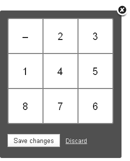
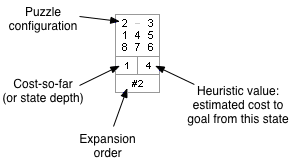

Welcome to N-Puzzle
This web application allows you to view a graphical representation of a range of different graph search algorithms, whilst solving your choice of 8-puzzle problems.
Getting Started
On the left-hand side of this application, you will see the Control Panel. Using the Control Panel, you can configure the following aspects of the application:
- Initial State and Goal State
- Which Search Algorithm to use
- Which Heuristic Function to use, if using an Informed Search Algorithm
- And whether to use single-step or burst mode
Each of these options will be described in more detail below.
Initial and Goal States
To set the Initial or Goal states, you can click either the 'Edit state' button or the graphical representation of the state.
You should see a popup like the following:
To change a tile, simply click on the tile that you would like to replace, then enter the new value on your keyboard. This will swap the tile with the one that previously held that value.
Search Algorithm
N-Puzzle supports five different Graph-based Search Algorithms. The first three are Uninformed Search Algorithms:
- Breadth-first Search
- Depth-first Search
- Iterative Deepening Search
The other two are Informed Search Algorithms:
- A* Search
- Greedy Search
If you choose an Informed Search Algorithm, then you will also need to select a Heuristic Function.
Heuristic Function
N-Puzzle supports three different Heuristic Functions:
- Euclidean Distance
- Manhattan Distance (City-Block distance)
- Tiles Out-of-place
Single-Step or Burst Mode
The Search Tree
State Representation
Node Colours
To help make the Search Tree more 'readable', the border of each node is colour-coded based on its current state.
The following diagram shows the A* algorithm (with the Euclidean distance heuristic) applied to a problem that can be solved in just two moves:
The colours can be interpreted as follows:
| Colour | Meaning |
|---|---|
| Blue | State is in the frontier, and has not been seen previously. |
| Red | |
| Grey | If a state has been explored, it will be grey. For example, in step 2) of the diagram above, the initial state has been coloured grey to indicate that it has been explored. In step 3), the initial state is rediscovered but will not be expanded again. |
| Green | Once the goal state has been found, it will be highlighted in green. |
| Gold | Once the goal state has been found, any states on the path from the initial state to the goal state will be highlighted. |
Step 1) corresponds to